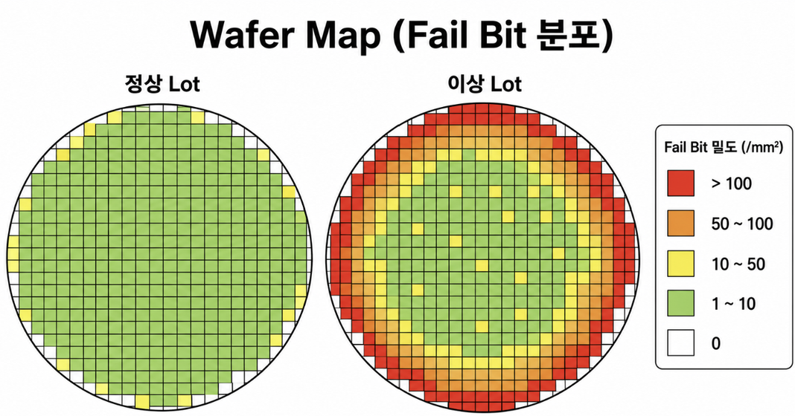
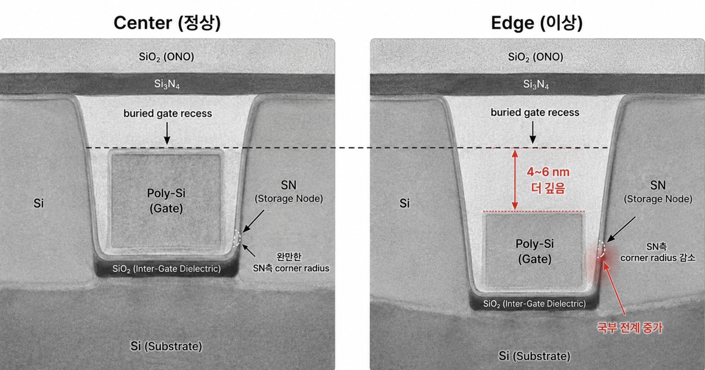
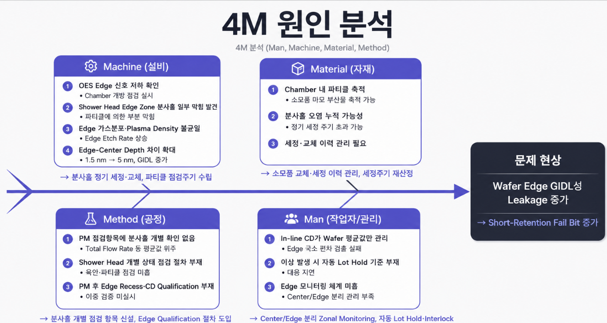

DRAM Data Retention 불량 개선
Fail Bit Rate 350ppm(관리기준 3.5배)의 근본원인을 GIDL로 규명
1c DDR5 BCAT DRAM의 Data Retention 불량 교육용 시나리오를 8D Report·4M·5-Why 방법론으로 분석했습니다. PCM 전기적 데이터로 가설을 세우고 TEM 단면 분석으로 물리적 교차검증해, 관리기준의 3.5배(350ppm)까지 치솟은 Fail Bit Rate의 근본 원인을 Shower Head 가스 분사홀 파티클 막힘에 의한 GIDL 증가로 규명하고, 단기·장기 개선방안과 재발방지대책까지 제안했습니다.
개요
SK하이닉스 청년 Hy-Po 팀 프로젝트(A-1조)로 진행한 교육용 불량 개선 과제입니다. "양산 중인 DRAM 제품에서 Data Retention 불량이 발생했다"는 가상 시나리오가 주어졌고, Subthreshold leakage·Junction leakage·Gate oxide leakage·Punch-through leakage 4가지 후보 메커니즘 중 하나를 선택해 4M·5-Why 기법으로 원인을 분석하고 8D Report 형식의 불량 개선 보고서를 작성하는 과제였습니다. 저희 팀은 PCM 전기적 데이터의 이상 패턴을 근거로 Junction Leakage 계열인 GIDL을 원인 메커니즘으로 선택했습니다.
현상 분석
문제 내용·발견 경위
- 2026.07.03 정기 양산 품질 모니터링 중 WT(Wafer Test) 담당 엔지니어가 Lot별 Retention Fail Bit Rate 급증을 최초 확인, 이후 인접 Lot에서도 추가로 확인됨
- 1c DDR5 BCAT 제품의 WT Retention Test에서 기준 시간 이전 Data 소실 불량 발생 — 발생 장소는 Fab, Wafer Test 공정 중 Data Retention Test 단계
| 구분 | Spec(관리기준) | 정상 Lot 평균 | 이상 Lot |
|---|---|---|---|
| Fail Bit Rate (ppm) | 100 ppm 이하 | 72 ppm | 350 ppm |

증상과 특징
- Short Retention Tail Cell 증가, Wafer Edge 영역 Fail 집중
- Storage Capacitance 정상 범위 — Cell Transistor 관련 PCM 이상 경향만 관찰
현장 조치사항 (D3 임시 조치)
- 해당 및 인접 Lot Hold, 출하 및 후속 공정 일시 보류
- 전수 Retention Test 재검 실시, PCM/In-Line Data 비교
- 공정·설비 이력 및 Chamber Log 확보
- 불량 Wafer 선별 후 전기적 특성 및 Physical Analysis 의뢰
원인 분석
PCM 데이터로 원인 후보 압축
| 항목 | 정상 Lot | 이상 Lot | 판단 |
|---|---|---|---|
| Capacitance | 24.8 fF | 24.6 fF | 정상 |
| Ioff @ VDD/2 (pA) | 12.3 | 38.7 | 이상 |
| Vth (V) | 0.38 | 0.34 | 경미 이상 |
Storage Capacitance는 정상 범위였던 반면 Ioff만 크게 증가한 패턴을 근거로, Storage Capacitor 자체 결함이 아니라 Gate-Drain 접합부 누설(Junction Leakage 계열)에 의한 불량으로 추정하고 GIDL(Gate-Induced Drain Leakage) 가설을 세웠습니다.
5-Why 원인 분석
현상: 1c DDR5 BCAT 제품의 WT Retention Test에서 기준 시간 이전 Data 소실 불량 발생
- 왜 Wafer Edge의 Retention Fail이 증가했는가? 불량 Lot의 PCM 데이터를 분석한 결과, Storage Node 측 Gate-Drain 영역에서 GIDL이 증가해 Negative Word Line Bias 인가 시 Leakage 전류가 급격히 상승하는 것을 확인 — Capacitance(24.6fF, 정상 대비 오차 1% 이내)는 정상 범위여서 Storage Capacitor 자체 결함이 아니라 접합부 누설에 의한 불량임을 시사
- 왜 GIDL이 증가했는가? 불량 Wafer를 Edge/Center로 구분해 TEM 단면 분석을 실시한 결과, Edge 영역의 BCAT Buried Gate Recess 깊이가 Center 대비 약 4~6nm 더 깊게 Etch되어 있었고, Storage Node 측 Corner Radius도 정상 약 1.5nm에서 약 1.0nm 수준으로 감소 — Corner가 뾰족해질수록 국부전계가 강해져 GIDL이 증가하는 물리적 메커니즘과 일치
- 왜 Edge 영역만 Etch Rate가 상승했는가? 해당 Lot이 투입된 Etch 설비의 공정 로그를 열람 — RF Power와 Total Flow Rate은 규격 범위 내로 정상이었으나, OES 센서의 Edge Zone 신호를 Center Zone과 비교한 결과 Edge 쪽 Plasma 발광 세기가 Center 대비 약 15% 감소한 구간이 확인됨
- 왜 장비 레시피를 안 건드렸는데도 Radical Uniformity가 악화되고 엣지 플라즈마 밀도가 튀었는가? Chamber를 개방해 점검한 결과 Edge Zone 가스 분사홀 일부에서 파티클에 의한 부분 막힘을 발견 — 노즐 마킹 손상 부위에 와류가 유도되면서 가스가 외곽으로 쏠려 분사되는 물리적 편차가 발생, 동심원 구조의 가스 분포 균형이 붕괴되며 Wafer Edge 영역 Plasma Density만 약 15% 급증
- 왜 이 분사홀 막힘이 사전에 발견되지 못하고 양산에 그대로 유입되었는가? Daily/PM 점검 항목이 Total Flow Rate와 Chamber 압력 등 계통 전체의 평균값만 대상으로 했고, Shower Head 분사홀 개별 상태를 육안 또는 파티클 기준으로 점검하는 절차는 없었음 — 일부 홀의 국소적 막힘이 평균 유량 이상으로는 드러나지 않아 이번 불량 조사에서 Chamber를 개방하고 나서야 뒤늦게 발견됨

GIDL 발생 메커니즘
GIDL은 강한 전계에 의해 밴드가 급격히 휘어지며 결함 없이도 전자가 가전자대에서 전도대로 직접 터널링하는 BTBT(Band-To-Band Tunneling)와, 계면·격자의 결함이 징검다리 역할을 해 전자가 두 단계로 나눠 장벽을 통과하는 TAT(Trap-Assisted Tunneling) 두 경로로 발생합니다. OFF 상태에서 Word Line에는 음전압, Storage Node에는 높은 전압이 인가되어 Gate–Drain Overlap 부근에 강한 전계가 형성되고(전계 형성) → Drain 표면의 에너지 밴드가 급격히 휘어지며 장벽이 얇아지고(밴드 밴딩) → BTBT/TAT로 전자-정공 쌍이 생성되며 터널링이 일어나고 (터널링 발생) → 전자는 Storage Node로, 정공은 P-well로 이동해 Storage Node의 저장 전압이 감소하면서 Data Retention Time이 짧아지고 Refresh Fail이 발생합니다 (전하 소실).
4M 원인 분석

- Machine — OES Edge 신호 저하 확인 → Chamber 개방 점검 실시, Shower Head Edge Zone 분사홀 일부에서 파티클에 의한 부분 막힘 발견, Edge 가스분포·Plasma Density 불균일로 Edge Etch Rate 상승, Edge-Center Depth 차이 1.5nm→5nm로 확대되며 GIDL 증가
- Method — PM 점검항목에 분사홀 개별 확인 없음(Total Flow Rate 등 계통 평균값 위주), PM 후 Edge Recess·CD Qualification 절차 없어 이중으로 못 걸러냄
- Material — Chamber 내 파티클 축적(소모품 마모 부산물 등), 정기 세정 주기를 초과해 분사홀 오염이 누적되었을 가능성
- Man — In-line CD가 Wafer 평균값만 관리해 Edge 국소 편차 검출 실패, 이상 발생 시 자동 Lot Hold 기준 부재로 대응 지연, Edge 모니터링 체계 미흡
근본 원인 및 CTQ
Shower Head Edge Zone 가스 분사홀의 파티클 막힘으로 Edge 영역 가스 분포·Plasma Density가 불균일해져 Edge Etch Rate가 상승했습니다. 이로 인해 BCAT Buried Gate Recess가 Edge에서 더 깊게 형성되고 Storage Node 측 Corner Radius가 감소하면서 국부 전계가 강해져 GIDL이 증가했고, 결과적으로 Storage Node 전하가 조기 소실되며 Short Retention Fail로 이어졌습니다.
Retention 성능 CTQ(Critical to Quality)
| CTQ 영역 | 관리 기준 |
|---|---|
| Retention 성능 | Fail Bit Rate ≤ 100ppm, Retention Time Spec 만족 |
| Edge 식각형상 | Edge-Center Recess Depth ≤ 1.5nm, Corner Radius 1.5nm 유지 |
| 설비 상태/균일도 | Radial Etch Uniformity 유지, Plasma Density 균일도 유지 |
| In-line 모니터링 | Edge Zone SPC 적용, 자동 Lot Hold 운영 |
개선 방안
단기 개선방안
- 해당 설비 Shower Head 즉시 교체 및 세정 — 파티클 소스 추적
- PM 후 Edge Etch 재검증 절차 신설 — Monitor Wafer로 Center/Edge Recess Depth·CD·Radial Etch Uniformity를 비교하고 기준 충족 시에만 양산 Lot 투입
- OES 센서 기반 국소 플라즈마 감지 강화 — 기존 RF Reflected Power 중심 감지에서 벗어나, Edge 포인트를 필수 포함한 Top/Middle/Center 등 챔버 내 3~4개 포인트를 실시간 모니터링해 가스 분사 불균일 조기 감지
- In-line 계측 및 Zonal Monitoring 적용 — Wafer 평균값 중심 관리에서 벗어나 Center/Edge 영역을 분리 관리하고, Edge 영역 CD·Recess Depth 편차를 별도 모니터링해 국소적 과식각 조기 검출
장기 개선방향
GIDL을 구조적으로 억제하는 Dual Workfunction Gate BCAT(Pi-BCAT) 연구 방향을 제시했습니다. 인접한 Passing Word Line(PWL)에 의한 간섭과 누설 전류를 억제하기 위해 고안된 구조로, Gate를 상하로 나눠 Drain과 겹치는 Top Gate에는 Work Function이 낮은 물질을 적용해 전계를 완화하고 GIDL을 줄이며, Bottom Gate에는 Work Function이 높은 물질로 문턱전압을 높게 유지해 Subthreshold Leakage를 억제하는 구조입니다. 시뮬레이션 연구에 따르면 기존 BCAT 대비 약 30%의 누설 전류 억제가 가능한 것으로 보고되어 있습니다.
피해대책·재발방지·Action Item
피해 대책
- Lot 역추적 및 확산 방지 — 해당 설비 PM 이후 진행된 관련 Lot 전수 Hold 및 Wafer Edge 영역 집중 Retention Test 진행
- 유출 범위 확정 — Edge Fail Bit 위치 Mapping 데이터와 PCM(GIDL/Vth) 이상 Lot 간 교차 분석을 통해 불량 영향권 범위 확정
- 물리적 검증 — 불량 Lot의 Edge/Center 영역 Cross-section 단면 분석(TEM)을 진행해 Recess Depth 및 Corner 곡률 변화 데이터 확보
재발 방지대책
- In-line 계측 및 모니터링 체계 개편 — Wafer 평균값(Mean) 위주 관리에서 벗어나 Center/Edge를 분리해 국소적 편차를 감지하는 Zonal Monitoring 체계로 전환
- Edge 영역 전용 관리기준(Spec) 신설 및 Interlock 연동 — Edge CD·Recess Depth에 대한 별도 관리한계선(UCL/LCL) 설정, 기준 이탈 시 즉각 설비 가동 중지하는 OCAP 및 자동 Interlock 시스템 구축
- 설비 PM 후 양산 셋업 검증 항목 고도화 — PM 직후 단순 평균 식각률뿐 아니라 Shower Head 분사홀 막힘 개별 점검(SOP 추가), OES 센서 기반 챔버 내 다중 포인트(Top/Middle/Center/Edge) 플라즈마 교차 검증, Radial Etch Uniformity를 필수 보증 항목으로 정식 편입
- 측정 로직 신설 — BCAT 식각 공정 직후 Edge 영역 Recess Depth 및 Corner 곡률 이상을 조기 감지하는 In-line Metrology 측정 스텝 추가
Action Item
| Action Item | 담당자 | 완료 일정 |
|---|---|---|
| Lot 역추적 및 유출범위 확정 (설비 PM 이후 가동 Lot 전수 Hold 및 Edge 영역 집중 Retention Test) | WT/수율분석팀 | 2026-07-29 |
| 설비 PM 작업표준서(SOP) 개정 및 셋업 검증 고도화 (Edge 안정화를 위한 RF Reflected Power 모니터링 기준 타이트닝) | 설비기술팀/공정개발팀 | 2026-08-19 |
| Zonal Monitoring 체계 개편 및 인라인 스텝 신설 (BCAT 식각 후 Edge Recess Depth/Corner 곡률 조기 감지 Inline Metrology 신설) | 소자팀/계측기술팀 | 2026-08-26 |
| Edge 전용 Spec 신설 및 자동 Interlock/OCAP 연동 (Edge CD/Recess Depth 독자 관리한계선 UCL/LCL 설정) | 공정제어팀/IT시스템팀 | 2026-09-16 |
배운 점
- 전기적 데이터(PCM)만으로 세운 가설은 반드시 물리적 분석(TEM)으로 교차검증해야 근본 원인으로 확정할 수 있다는 것을 배웠습니다 — Capacitance는 정상이었지만 Ioff 이상만으로 GIDL을 의심하고, TEM으로 Recess Depth·Corner Radius 변화를 직접 확인하고 나서야 결론에 확신을 가질 수 있었습니다
- 설비 이상은 계통 평균값 관리만으로는 조기에 걸러지지 않을 수 있고, Edge처럼 국소적으로만 나타나는 이상은 점검 항목 자체를 세분화해야 발견할 수 있다는 점을 5-Why를 끝까지 따라가면서 확인했습니다